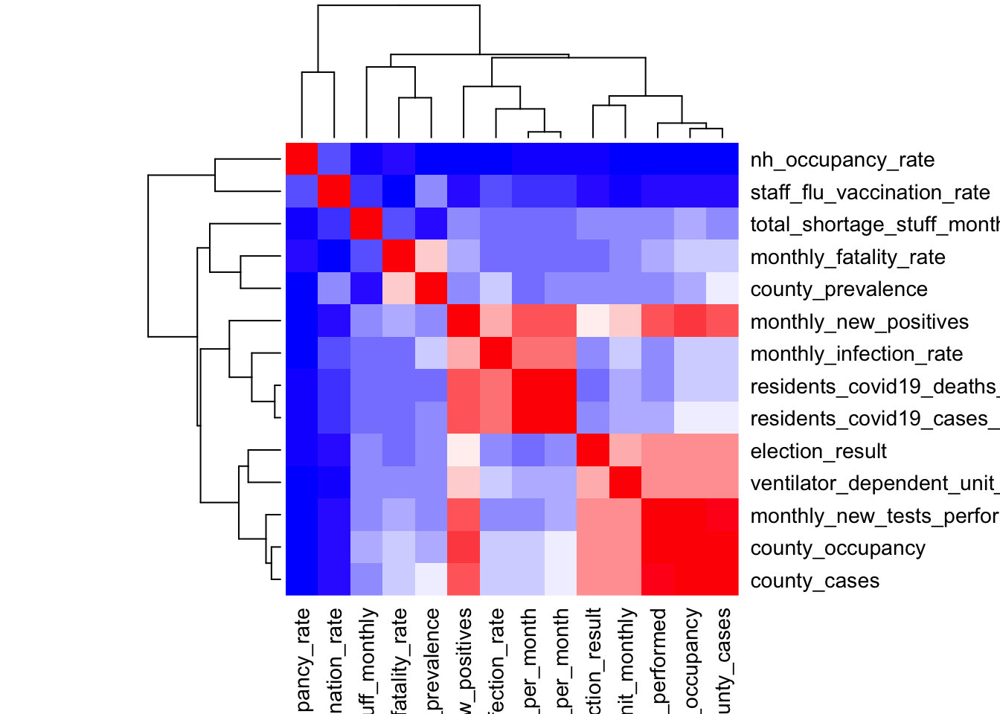
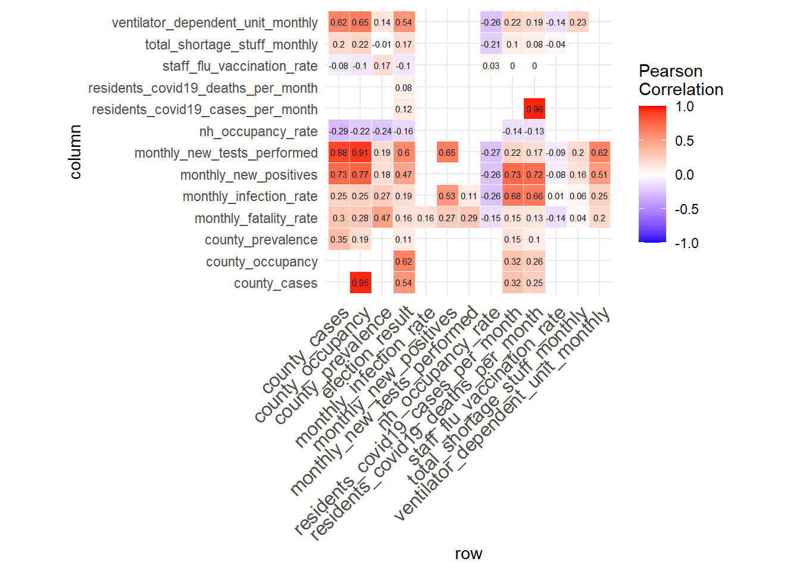
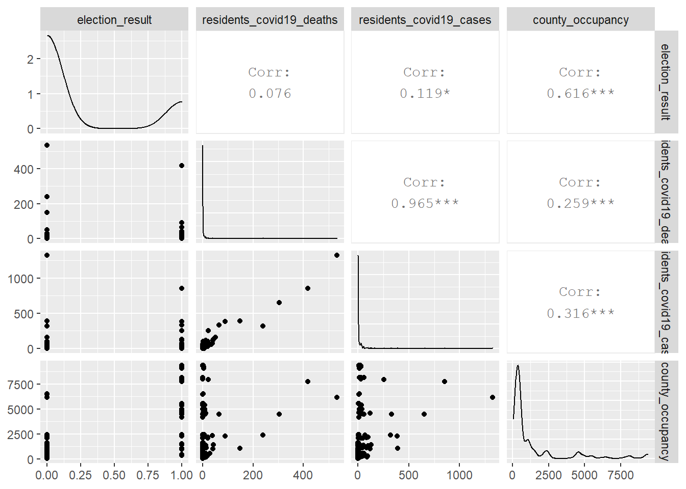

In this section we are going to do the following three analysis: Correlation Matrix, Wilcoxon Rank-sum Test and Regression.
library(tidyverse)
library(corrplot)
library("Hmisc")
library("PerformanceAnalytics")my_data =
read_csv("./data/overall_df.csv") %>%
janitor::clean_names() %>%
relocate(election_result) %>%
mutate(
election_result = recode(election_result, "D" = "1", "R" = "0")
) %>%
mutate(election_result = as.numeric(election_result)) %>%
select(-county,-month, -nh_monthly_fatality_rate, -total_supply_ppe_monthly) # reasons to delete last two variables is corr coef are NA.
res = cor(my_data, use = "complete.obs") #handle missing value
res2 = rcorr(as.matrix(my_data)) # calculate the correlation p-values
# Extract the correlation coefficients：res2$r
# Extract p-values：res2$P
# format the correlation matrix
flattenCorrMatrix <- function(cormat, pmat) {
ut <- upper.tri(cormat)
data.frame(
row = rownames(cormat)[row(cormat)[ut]],
column = rownames(cormat)[col(cormat)[ut]],
cor =(cormat)[ut],
p = pmat[ut]
)
}
res2 = rcorr(as.matrix(my_data[,1:14]))
tidy_df =
flattenCorrMatrix(res2$r, res2$P) %>%
mutate_if(is.numeric, ~round(., 2))
#display a chart of a correlation matrix
#chart.Correlation(my_data, histogram=TRUE, pch=19)
# heat map
col<- colorRampPalette(c("blue", "white", "red"))(20)
heatmap(x = res, col = col, symm = TRUE)
ggplot(data =tidy_df, aes(x=row, y=column, fill=cor))+
geom_tile(color = "white")+
scale_fill_gradient2(low = "blue", high = "red", mid = "white",
midpoint = 0, limit = c(-1,1), space = "Lab",
name="Pearson\nCorrelation") +
theme_minimal()+
theme(axis.text.x = element_text(angle = 45, vjust = 1,
size = 12, hjust = 1))+
coord_fixed() +
geom_text(aes(x=row, y=column, label=cor), color = "black", size = 2)
library(rvest)
library(lattice)
library(faraway)
library(broom)nursing_house_df =
read_csv("./data/overall_df.csv") %>%
janitor::clean_names() %>%
select(nh_monthly_fatality_rate) %>%
drop_na() %>%
filter_all(all_vars(!is.infinite(.)))
residents_df =
read_csv("./data/overall_df.csv") %>%
janitor::clean_names() %>%
select(monthly_fatality_rate) %>%
drop_na()par(mfrow=c(2,2))
hist(nursing_house_df$nh_monthly_fatality_rate, xlab = "nh_monthly_fatality_rate", freq=T, main="nursing home monthly fatality rate")
hist(residents_df$monthly_fatality_rate, xlab = "monthly_fatality_rate", freq=T, main="residents monthly fatality rate")
qqnorm(nursing_house_df$nh_monthly_fatality_rate, col=2, pch=19, cex=1.5)
qqline(nursing_house_df$nh_monthly_fatality_rate, col = 1,lwd=2,lty=2)
qqnorm(residents_df$monthly_fatality_rate, col=2, pch=19, cex=1.5)
qqline(residents_df$monthly_fatality_rate, col = 1,lwd=2,lty=2)
From the Histogram and QQ Plot, we can see that the distribution of nursing home monthly fatality rate and residents monthly fatality rates are heavily right skewed. Therefore, they violated the normality assumptions. We are going to use non-parametric test: Wilcoxon Rank - Sum Test to do the following hypothesis test:
H0: The medians level of monthly fatality rate are the same for NYC residents and nursing home seniors.
Ha: The medians level of monthly fatality rate are different for NYC residents and nursing home seniors.
res <- wilcox.test(nursing_house_df$nh_monthly_fatality_rate, residents_df$monthly_fatality_rate, mu=0)
nursing_house_df %>% count()## # A tibble: 1 x 1
## n
## <int>
## 1 172residents_df %>% count()## # A tibble: 1 x 1
## n
## <int>
## 1 300res$statistic<-res$statistic + 300*(300+1)/2
res##
## Wilcoxon rank sum test with continuity correction
##
## data: nursing_house_df$nh_monthly_fatality_rate and residents_df$monthly_fatality_rate
## W = 72365, p-value = 0.3194
## alternative hypothesis: true location shift is not equal to 0From the Wilcoxon rank sum test with continuity correction, we can see the p-value is 0.3194 > 0.05. Therefore, we fail to reject null hypothesis. We are 95% confident that the medians level of monthly fatality rate are the same for NYC residents and nursing home seniors.